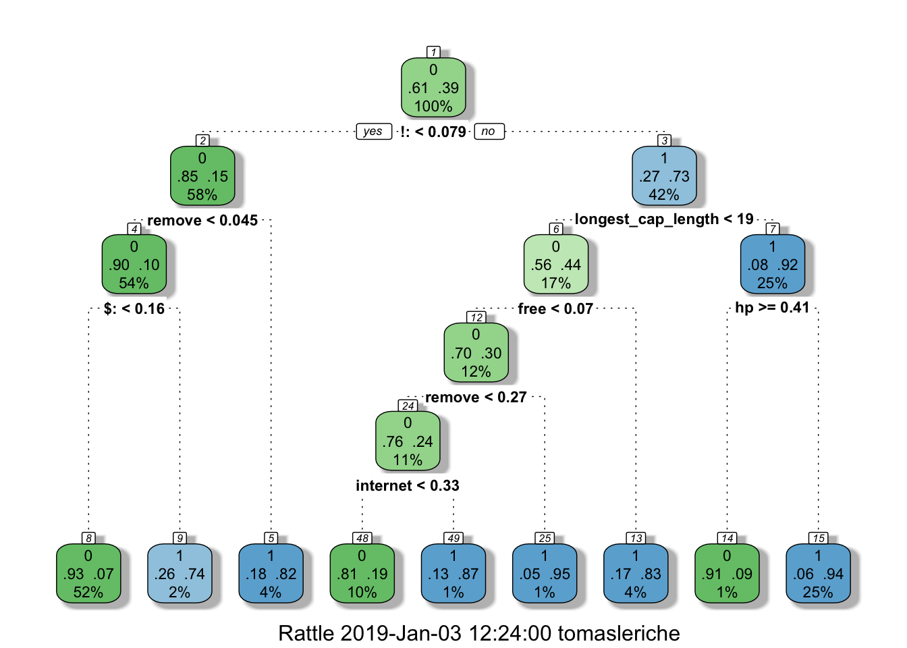

# FROM: Dua, D. and Karra Taniskidou, E. (2017). UCI Machine Learning Repository [http://archive.ics.uci.edu/ml]. Irvine, CA: University of California, School of Information and Computer Science.
spamData = read.csv('spamData.csv')
names(spamData) <- c("make","address","all","3d","our","over","remove","internet","order","mail","receive","will","people","report","addresses","free","business","email","you","credit","your","font","000","money","hp","hpl","george","650","lab","labs","telnet","857","data","415","85","technology","1999","parts","pm","direct","cs","meeting","original","project","re","edu","table","conference",";:","(:","[:","!:","$:","#:","avg_cap_length","longest_cap_length","total_cap_length","spam_label")
n <- nrow(spamData)
shuffled <- spamData[sample(n),]
set.seed(1)
# Initialize the accs vector
accs <- rep(0,6)
for (i in 1:6) {
# These indices indicate the interval of the test set
indices <- (((i-1) * round((1/6)*nrow(shuffled))) + 1):((i*round((1/6) * nrow(shuffled))))
# Exclude them from the train set
train <- shuffled[-indices,]
# Include them in the test set
test <- shuffled[indices,]
# A model is learned using each training set
tree <- rpart(spam_label ~ ., train, method = "class")
# Make a prediction on the test set using tree
pred <- predict(tree, test, type = "class")
# Assign the confusion matrix to conf
conf <- table(test$spam_label, pred)
# Assign the accuracy of this model to the ith index in accs
accs[i] <- sum(diag(conf))/sum(conf)
}
print(accs)## [1] 0.9022164 0.9022164 0.9152542 0.8748370 0.8826597 0.8877285print(mean(accs))## [1] 0.894152# Print out the mean of accsBias and variance are main challenges of machine learning. bias are wrong assumptions. variance is due to sampling.
irriducilbe error: noise, shouldn’t be minimized. reducible error: bias and variance.
# Example of assigning levels to a predictor
#spam_classifier <- function(x){
# prediction <- rep(NA, length(x))
# prediction[x > 4] <- 1
# prediction[x <= 4] <- 0
# return(factor(prediction, levels = c("1", "0")))
#}if (!require("rpart.plot")) install.packages("rpart.plot")
library(rpart.plot)
if (!require("RColorBrewer")) install.packages("RColorBrewer")
library(RColorBrewer)
if (!require("rattle")) install.packages("rattle")
library(rattle)
train_indices <- 1:round(0.7*n)
train <- shuffled[train_indices,]
test_indices <- (round(0.7*n)+1):n
test <- shuffled[test_indices, ]
tree <- rpart(spam_label ~ ., train, method = "class")
pred <- predict(tree, test, type = "class")
conf = table(test$spam_label ,pred)
acc = sum(diag(conf))/sum(conf)
print(acc)## [1] 0.8826087print(conf)## pred
## 0 1
## 0 778 57
## 1 105 440fancyRpartPlot(tree)